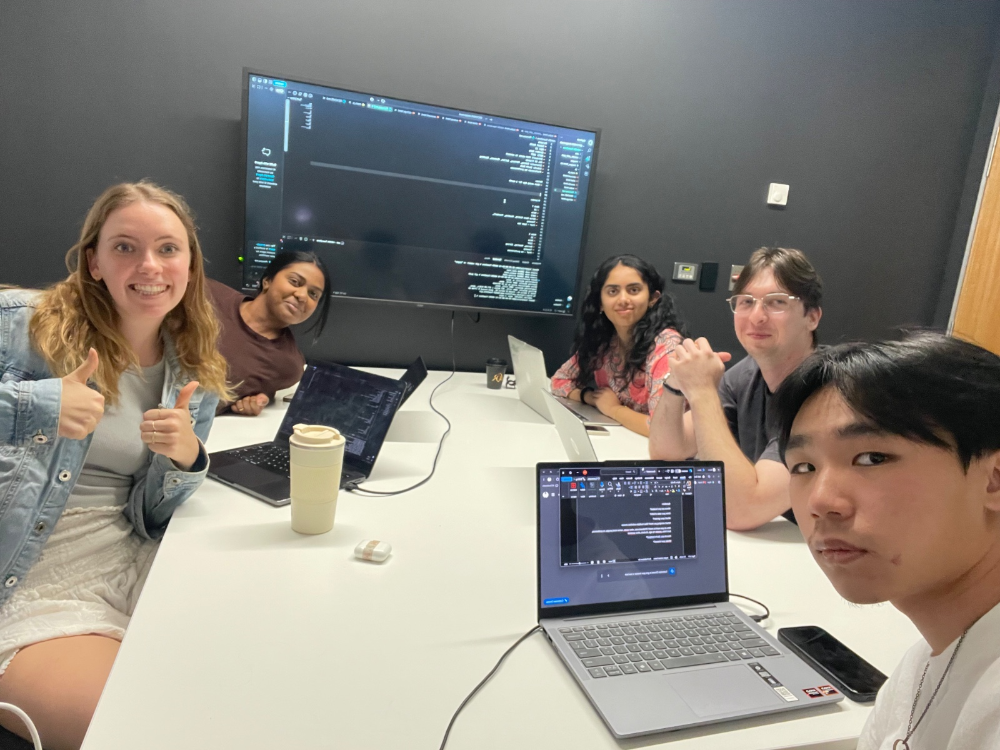

ABOUT US
Meet the team behind INTROSPHEER
INTROSPHEER is designed to help people build meaningful social connections through shared interests, events and conversations. Our goal is to create a welcoming space where users can discover activities, connect with others and feel more comfortable getting involved.

OUR TEAM
Built together.
INTROSPHEER was created collaboratively by our team as part of our university project. Through research, design, prototyping, testing and development, we worked together to create an experience focused on making social interaction easier and more approachable.
Each member of the team contributed different ideas, perspectives and skills throughout the design and development process.
References
View the sources and resources used throughout the development of INTROSPHEER.